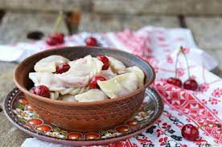

Рецепт вареників

Інгредієнти:
- 500 гр. борошна
- 250 мл води
- 2 яйця
- 1/2 чайної ложки солі
- 600 гр. начинки (картопля, творог, вишні тощо)
- олія для змащення
Інструкції:
- Змішайте борошно і сіль у великій мисці.
- Додайте яйця та воду, поступово змішуючи.
- Готуйте тісто, поки воно не стане м'яким та еластичним.
- Розіліть тісто на стіл та виріжте круги за допомогою склянки або спеціального формувача для вареників.
- Додайте начинку в центр круга тіста та замкніть його, створюючи напівкруг.
- Готуйте вареники у киплячій воді протягом 5-7 хвилин, доки вони не випливуть на поверхню.
- Підайте вареники з олією та сметаною.
Повернутися до списку страв